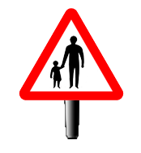
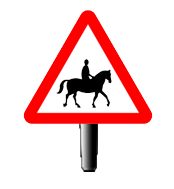
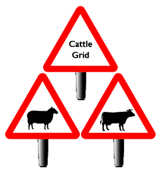
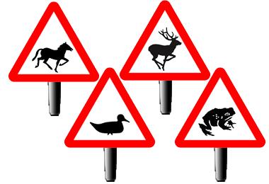
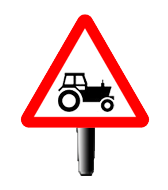

Pedestrians

Where there is no footpath, pedestrians are encouraged to
walk on the right side, facing the oncoming traffic. Be prepared to MSM around
them if necessary, giving them plenty of room and pass at a low speed.
Horses

It’s not uncommon to encounter horses on country roads.
-If they are oncoming, reduce your speed and pass carefully.
-When approaching horses from behind, slow down and be prepared to
follow at a safe distance if you are not able to give them plenty of room.
-Don’t sound your horn or rev your engine as they can be
easily startled.
-Pass slowly with plenty of space.
-Look out for arm signals by the rider which are the same as for cyclists:
Farm Animals

-Be careful where there are warnings of farm animals on the road.
-Be patient where farmers are moving livestock along or across a road.
-Cross cattle grids slowly and beware of animals on the road beyond them. In mountainous areas it is not uncommon for sheep to roam free range and they will often wander on the roads.
Wild Animals

-Keep a keen eye and be prepared to slow down where there is a danger of wild animals on the road
Tractors

You might encounter slow moving tractors or farm vehicles
which may not only travel slowly but take up a large portion of the road. Only
overtake them if there’s a clear, safe opportunity, otherwise follow at a safe
distance and wait for them to turn off. They usually only make short journeys
and will occasionally pull over to let traffic pass.